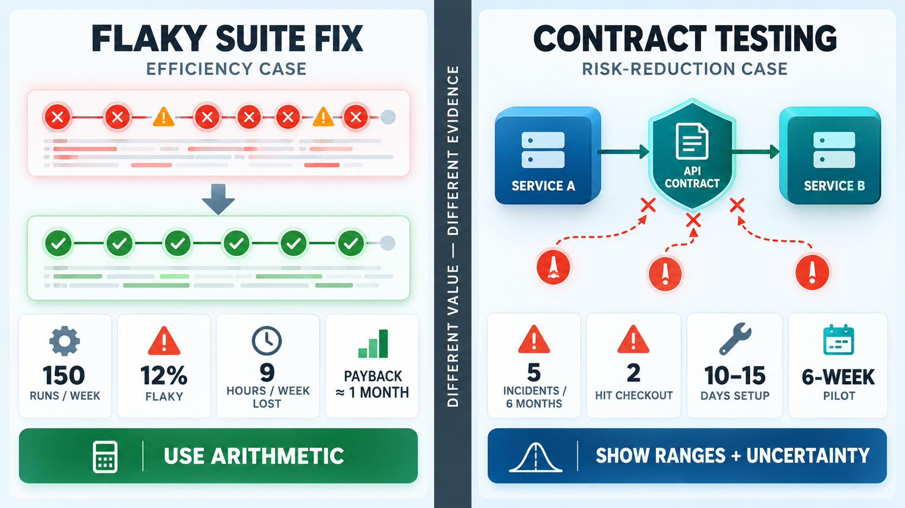
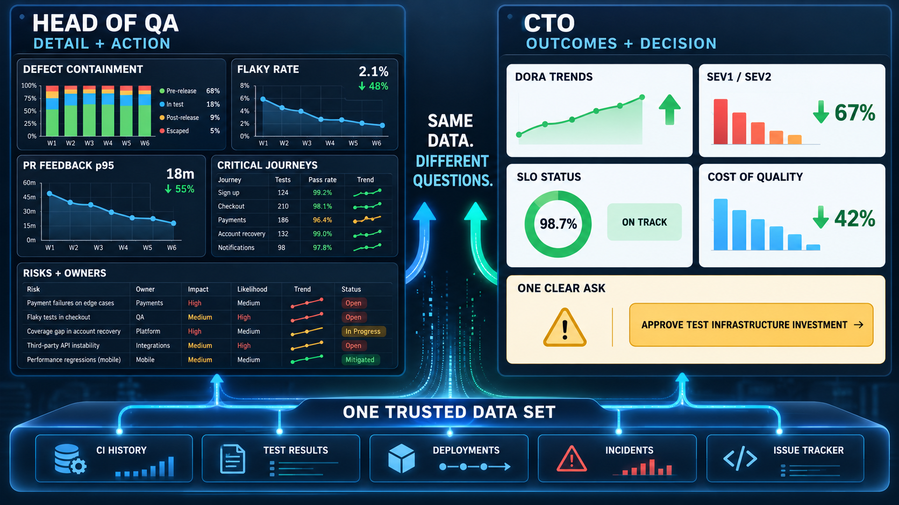

Sooner or later every SDET ends up in one of two conversations. In the first, you want time, money or people for something: fixing the flaky suite, rolling out contract testing, building a proper performance stage. In the second, someone asks whether quality is actually good, and "it feels fine" isn't an answer anyone can act on.
Both are arguments, and metrics are the evidence. Without them you're trading opinions, and in a disagreement between the SDET's opinion and the roadmap, the roadmap usually wins. With them, you can make a case that holds up when someone more senior pokes at it.
This post works through a scenario. It's hypothetical, and every number in it is illustrative rather than taken from a real company, but the structure is one that plenty of people will recognise:
- A startup of a few dozen people, with one product, a handful of services and one or two delivery teams.
- The SDET reports to the Head of QA, who owns the quality strategy and the QA team.
- The CTO is close. There aren't five layers of management in between. The CTO probably reviews pull requests now and then, and could open your dashboard if they felt like it.
Being close to the CTO is an advantage. It's also a trap, because it tempts you to show the CTO the same thing you'd show the Head of QA. They're asking different questions, so they need different reports.
Why measure quality at all
Quality has an awkward property: when it's working, nothing happens. No incident, no angry customer, no rollback. Nobody gets credit for a Tuesday when nothing broke, and from the outside a good test strategy looks the same as no test strategy, right up to the day it doesn't.
Metrics make the invisible part visible:
- They turn "nothing happened" into evidence. "No Sev1s this quarter" is a sentence. "The pipeline blocked 14 changes this quarter, and here are the three that would have broken checkout" is a story with proof behind it.
- They show trends before they become incidents. A suite that takes two minutes longer every month or a flaky rate that creeps up never trigger an alert on any given day. On a chart they're obvious.
- They settle arguments. "Testing slows us down" and "we need more testing" can both be true or false. Lead time, change failure rate and where defects get caught tell you which.
- They show whether your own work paid off. If you can't show that an initiative changed anything, you can't be sure it did.
One warning applies to the whole topic. Goodhart's law: when a measure becomes a target, it stops being a good measure. Put a team's bonus on the test count and you'll get more tests, not better ones. Put it on bugs logged and you'll get a lot of one-line tickets. Use metrics to understand the system, not to grade people, and say so out loud when you introduce them.
The metrics worth tracking
There are hundreds of things you could count. At a startup, you want a small set that covers four layers, from what customers feel down to what the team spends.
1. Outcomes: what customers actually experience
- Escaped defects, meaning bugs found in production, broken down by severity. The single most honest quality number. Most teams use a numbered severity scale where lower means worse: Sev1 is critical (a core service down, data lost or exposed, money directly affected), Sev2 is major (an important feature broken, but with a workaround or only some users hit), and Sev3 and below are minor or cosmetic. The exact definitions vary between companies.
- Change failure rate: the percentage of deployments that cause an incident, a rollback or a hotfix.
- Time to restore: how long it takes to recover when something does break.
- SLOs and error budgets for the journeys that make money: sign-up, login, checkout. Latency belongs here too, as p95 and p99 rather than the average (I covered why in the percentiles post).
2. Delivery flow: how fast change gets to users safely
- The DORA metrics. DORA (DevOps Research and Assessment) is the research programme behind the yearly State of DevOps reports and the book Accelerate. It found that four measures reliably separate strong delivery teams from weak ones. Two measure speed: deployment frequency (how often you release to production) and lead time for changes (how long a commit takes to reach production). Two measure stability: change failure rate (the share of deployments that cause a failure) and time to restore (how long recovery takes when something breaks). They pull against each other, which makes them hard to game: shipping recklessly improves speed and wrecks stability, and freezing releases does the opposite. Most CTOs already know them.
- PR feedback time: how long from push to a green or red pipeline. This is the number developers feel every day.
3. Test health: the leading indicators
- Defect containment: of all the defects found, what share were caught before production, and at which stage (PR, nightly, staging, production). This tells you whether your layers are catching things where they're cheapest to fix.
- Flaky rate: how often a test fails and then passes on the same commit with no code change.
- Suite duration and its trend.
- Critical journey coverage: which of the business-critical user journeys have automated checks and which still rely on someone clicking through them. This is far more useful than line coverage.
- Mutation score on core modules, if you want to know whether the tests would actually notice a bug (more on that here).
4. Cost: what quality is costing in time and money
- Manual regression hours per release.
- Time lost to flaky reruns and to investigating failures that turned out to be noise.
- CI spend, in minutes or money.
- Incident cost: engineer hours spent firefighting, plus whatever the business lost while things were broken.
And a few to keep off the slides, or at least never show on their own: raw test count, number of bugs logged, line coverage percentage and pass rate without context. They're easy to collect, easy to inflate and say very little about whether users are safe.
Two jobs, two shapes of evidence
The two conversations from the start need different evidence.
Proving an initiative is worth it is a business case. It's about the future, and it needs a baseline, a cost, an expected benefit and a way to tell afterwards whether it worked.
Proving quality is high is an assurance report. It's about the present and the recent past, and it needs trends, context against targets and honesty about the bad bits.
Mixing them up is a common mistake. A health report padded with a pitch reads like spin. A pitch made of health metrics leaves the listener asking "so what do you want?"
Making the case: flaky tests versus contract testing
To show how different two business cases can be, take two initiatives the SDET might want to pitch at our hypothetical startup. Both are reasonable, and both cost a couple of weeks of effort. They need very different arguments.
Case A: fixing the flaky suite
The problem: the PR pipeline fails intermittently, people have learned to hit rerun, and nobody trusts a red build any more.
The evidence for this one is already sitting in your CI history. Illustrative numbers:
- Around 150 pipeline runs a week across eight engineers.
- 12% of runs fail on a test that then passes on rerun: about 18 flaky failures a week.
- Each one costs an engineer roughly 30 minutes: reading the log, deciding it's "probably flaky", rerunning, getting back into what they were doing.
- That's about 9 hours a week, a little over a person-day a week, or 4 to 5 person-days a month, before counting merges held up by the wait.
The proposal: about 5 days of SDET time to switch on flaky detection, quarantine the worst offenders and fix the top ten, plus about half a day a month to keep it under control.
The maths is direct: the effort pays for itself in roughly a month, and keeps paying after that. There's also a cost that doesn't fit neatly into hours. Once a team expects red builds to be noise, a real failure gets rerun until it's green too. Even if nobody can put a number on that risk, it's worth naming.
What makes this case strong:
- The data already exists. You're not forecasting, you're describing what is happening now.
- It's measurable straight away. Flaky rate and reruns per week drop within a sprint or two if the work is effective.
- It's mostly inside QA's own remit. The Head of QA can usually approve it from existing capacity, so it might not need to reach the CTO as a request at all, only as a result.
Case B: rolling out contract testing
The problem: services talk to each other through APIs that change, and some of those changes have broken production. I've written before about how mocks drift away from the real service; contract testing is the usual fix.
The evidence here comes from incident history, and it's thinner. Illustrative numbers:
- In the last six months, 5 incidents traced back to one service changing a response the other relied on: a renamed field, a new enum value, a changed rule behind a 200.
- Each took about 3 hours to restore and roughly two engineer-days to investigate, fix and write up. That's about 10 person-days over six months, or under 2 a month.
- Two of the five hit checkout, so there's lost revenue and support load as well, which is harder to price.
The proposal: about 10 to 15 days to set up a contract broker, write contracts for the three integrations that change most often and wire provider verification into both pipelines, plus 1 to 2 days a month of upkeep, much of it from the developers who own the services.
On engineer hours alone, this doesn't obviously pay back. It might take most of a year, and that's if it prevents every one of those incidents, which it won't. If you present it as an ROI calculation, you'll lose the argument, and you'll deserve to.
The real value is risk reduction: fewer customer-facing breakages, a lower change failure rate and the freedom for teams to change their services without fear. So the pitch has a different shape:
- Frame it as insurance, with ranges, not a single number. "Integration changes caused 5 incidents in 6 months, 2 of them on checkout. We expect contract testing to catch most of this class, not all of it."
- Propose a pilot. One integration, six weeks. Much easier to approve than a platform, and it gives you real data for the next decision.
- Agree the leading indicator up front. Count breaking changes caught by provider verification before merge. Not every one would have become an incident, so be careful how you present it, but it's the earliest signal that the investment is doing something.
- Agree the lagging indicator too. Escaped integration defects and change failure rate over the following quarters. This is the result that proves the case, and it takes months.
- Name the cross-team cost. Developers have to write and maintain contracts. That's a cost in delivery capacity, which makes it the CTO's decision, not QA's alone.
What's actually different
| Case A: flaky tests | Case B: contract testing | |
|---|---|---|
| Type of value | Efficiency: time given back | Risk reduction: incidents avoided |
| Where the evidence lives | CI history | Incident and bug history |
| Confidence | High, it's measured now | Lower, it's partly counterfactual |
| Time to show results | Weeks | Months to quarters |
| How to present it | Straight cost vs payback | Range of risk, plus a pilot |
| Who decides | Usually the Head of QA | The CTO, because it costs dev capacity |
| Biggest risk in the pitch | Underselling the trust problem | Overselling with a precise ROI |

The general lesson: efficiency cases want arithmetic, risk cases want honesty about uncertainty. Forcing a risk case into ROI form is how SDETs lose credibility, because the first person who checks the maths will find the assumptions doing all the work.
Two rules apply to both:
- Measure the baseline before you change anything. If you start fixing flaky tests before recording the flaky rate, you'll never be able to show the improvement.
- Write down what success looks like, and when you'll check. "Flaky rate under 2% within six weeks" or "zero escaped defects on the piloted integration this quarter". It makes the follow-up conversation easy, and it shows you're not asking for a blank cheque.
Proving quality is high
The assurance report has a different problem: it's easy to make look good and hard to make believable. A few things make it credible:
- Trends over snapshots. "Change failure rate 8%" means nothing alone. "Down from 15% to 8% over two quarters, against a target of 10%" means something.
- Show what the safety net caught. Defect containment by stage is the closest thing to evidence for the incidents that didn't happen. "92% of defects this quarter were caught before production, most of them at PR stage" says the layers are working.
- Bring the bad news yourself. If there was a Sev1, it goes in the report, with root cause and what changed afterwards. A report that's all green is a report people stop believing.
- Tie it to targets someone agreed to. An SLO the CTO signed off on is a much stronger reference point than a threshold QA picked alone.
What to show the Head of QA
The Head of QA owns how quality is achieved. They want depth, leading indicators and enough detail to decide where the team's effort goes next. They also need to be able to defend QA's work upward, so part of your job is giving them material they can reuse.
Cadence: weekly or per sprint, as part of a 1:1 or a short QA sync. Format: the live dashboard, plus a short written note on what changed and why.
What goes in:
- Defect containment by stage, and any defects that escaped, each with a root cause category: missing test, environment gap, requirement gap, data issue.
- Flaky rate, with the ten worst tests by name and who's looking at them.
- Suite duration and PR feedback time trends.
- Critical journey coverage: what's automated, what's manual, what's not covered at all.
- Progress on current initiatives against the success criteria you agreed.
- Risks and asks: anything you're worried about, anything you need.
A note in this style is enough:
QA update, sprint 42
Headline: flaky rate down to 3.1% (from 7.4%); one escaped defect.
Escaped: 1 (Sev3, discount code rounding). Root cause: no test for
currency edge cases. Test added; 4 similar cases being reviewed.
Caught: 23 defects pre-prod (PR 17, nightly 4, staging 2).
Flaky: top offender is checkout_payment_timeout, quarantined,
fix in progress with the payments team.
Pipeline: PR feedback p95 11m (target 10m). Nightly up 4m since
the search suite was added.
Coverage: 7 of 9 critical journeys automated. Refunds and account
deletion still manual.
Risk: account deletion is untested before release and touches
personal data. Proposing to automate next sprint.
Notice that it's detailed, and that every number has a comparison or a next step attached. The Head of QA can act on every line.
What to show the CTO
The CTO owns delivery, cost and risk for the whole engineering organisation. They're asking: are we shipping fast enough, are we breaking things, what's it costing, and is there a decision I need to make?
Cadence: monthly or quarterly, plus whenever there's a decision to make. Format: one page, or three slides at most. Five minutes, with the dashboard link for anyone who wants to dig in.
What goes in:
- The four DORA metrics, as trends.
- Escaped Sev1 and Sev2 defects, as a trend, with one line on each.
- SLO status for the money journeys.
- Cost of quality in hours or money: manual regression time, time lost to reruns, incident time.
- One headline per initiative: what it was meant to do and whether it's doing it.
- The ask, if there is one, stated as a decision.
Something like:
Quality & delivery, Q3
Bottom line: shipping more often with fewer failures. One decision needed.
Deploys/week 12 → 19 Lead time 2.1d → 1.3d
Change failure 15% → 8% Time to restore 3.5h → 1.2h
Escaped Sev1/Sev2 4 → 1 Checkout SLO 99.6% (target 99.5%)
Flaky test fix: ~4 person-days/month of reruns given back to the team.
Remaining risk: integration changes between services caused 5 incidents
in 6 months, 2 on checkout.
Decision: approve a 6-week contract testing pilot on the orders ↔
payments integration (~12 dev days + SDET time). We'll report back
with caught breaking changes and incident data.
No test names, no flaky leaderboard, no suite duration. All of that sits behind the numbers, and the CTO can ask for it. What they get is a direction, a cost and a clear question.
In a startup the CTO might well ask for the detail, and that's fine; have the dashboard ready. But lead with the summary. Being close to the CTO means you get their attention easily, not that you should spend it on detail.

Building the data and the dashboard
You don't need a metrics database, a data pipeline or a dedicated quality platform. If you're already on an observability tool like Datadog, most of this is a tagging problem, not a storage problem. Send pipeline and test results there with consistent tags, and the dashboards are a few widgets and filters on top.
Pipelines. Datadog's CI Visibility connects to GitHub Actions, GitLab, Jenkins and the other common CI providers and records every pipeline, stage and job: duration, status, retries, branch and commit. That covers PR feedback time, pipeline duration trends and how often main goes red, with nothing to build.
Tests. Test Optimization (previously Test Visibility) records every test run. You can instrument the framework with the Datadog library for your language, or send the JUnit XML that almost every framework already produces with the datadog-ci CLI. It also detects flaky tests on its own: a test that both passes and fails on the same commit gets flagged, so you don't have to work that out yourself.
Tags are what make it useful. Raw test results answer "what failed". Tags answer "what failed, for which team, on which user journey, at which layer and at which stage". A small, agreed set is enough:
team: who owns it (team:checkout,team:platform)service: what it testsjourney: the business-critical flow it protects (journey:signup,journey:checkout,journey:refunds)layer:unit,component,contract,e2e,performancestage: where it ran (pr,nightly,staging,post-deploy)
With the JUnit route, tagging is one step in the pipeline:
- name: Upload test results to Datadog
if: always()
env:
DATADOG_API_KEY: ${{ secrets.DATADOG_API_KEY }}
run: |
npx @datadog/datadog-ci junit upload \
--service checkout-api \
--tags team:checkout \
--tags journey:checkout \
--tags layer:e2e \
--tags stage:pr \
reports/junit/
The if: always() matters: you want the results uploaded when tests fail, because failing runs are where most of the useful data is.
Once the tags are consistent, most of the Head of QA view is just filters and groupings:
- Flaky tests by team, with the top ten by name.
- Failures grouped by
stage, which shows where problems are being caught. That's the pre-production half of defect containment. - Tests grouped by
journey, showing which critical journeys have automated coverage at all and whether they're passing. A journey with no tagged tests is a gap you can see on the dashboard. - Duration by
layer, so you can see whether e2e is eating the pipeline.
The CTO view comes from the same place:
- DORA metrics: Datadog's DORA Metrics feature takes deployment events from your pipeline and failure events from incidents, and calculates deployment frequency, lead time, change failure rate and time to restore.
- SLOs and latency percentiles for the money journeys, from the monitoring you already have.
- Pipeline and test trends, rolled up into one or two lines rather than a leaderboard.
Two dashboards, not one. Build a detailed QA view and a summary CTO view on the same data. That matters: when the CTO asks why a number moved, the Head of QA can click straight through from the summary widget to the tests and pipelines behind it.
Two things still need care, whatever tool you use:
- Tagging discipline is the whole game. If half the suites tag
journey:checkoutand the other halfjourney:check-out, the dashboard silently lies. Agree the tag names, keep them in one shared CI template or config, and treat a missing tag as a broken build step. - Production defects live in the issue tracker. The production half of defect containment, escaped defects with severity and root cause, comes from Jira or Linear, not from CI. Add "found in" (PR, nightly, staging, production, customer), severity and root cause category as required fields on bugs. It's a five-minute change most teams never make, and without it the most valuable metric on this list can't be calculated. Either report it from the tracker's own dashboards or send it to Datadog as an event or metric, so that everything sits on one screen.
If you're not on Datadog, the same approach works elsewhere: Grafana with your CI's data source, Allure or ReportPortal for test history. And if all of that is too much for week one, a spreadsheet updated weekly is a perfectly good version one. What makes it work is the tagging and the habit, not the tool.
And give every metric an owner. A number nobody is responsible for will drift quietly until it's useless.
How to present it
The data is half the job. The other half is how it lands.
- Lead with the conclusion. Headline first, evidence second, ask last. If the listener stops after one sentence, they should still have the main point.
- Speak the listener's language. For the Head of QA, that's risk, coverage and where the team's effort should go. For the CTO, it's time, money, customers and delivery speed. "Flaky rate 3%" is a QA sentence. "About four person-days a month given back to the team" is a CTO sentence.
- Every number gets context. A baseline, a target or a trend. A number on its own invites "is that good?", and you've lost the room while you explain.
- One chart, one point. Annotate the moment something changed, like "flaky quarantine introduced here", so the cause and effect are on the chart rather than in your explanation.
- A dashboard isn't a report. Dashboards are for self-service and digging. The report is the narrative on top. Sending someone a link to twenty panels is asking them to do your analysis.
- No surprises for your manager. Even with the CTO a desk away, the Head of QA sees the numbers first. Often the right move is for them to present to the CTO with you alongside to answer the detail. It keeps the chain of trust intact, and it makes the case stronger because it comes from QA as a whole rather than from one person.
- Keep it informal where the company is. At a startup, the CTO report might be a monthly post in a Slack channel or fifteen minutes in a standing meeting. That's fine. Consistency matters more than polish.
Common traps
- Too many metrics. If the report has thirty numbers, nobody knows which three matter. Start with five or six and add only when someone asks a question you can't answer.
- Measuring what's easy instead of what matters. Test count is easy. Defect containment needs a tracker field. Do the harder one.
- Reporting without deciding. If a metric never changes what anyone does, stop reporting it.
- Turning metrics into targets for people. The moment the flaky rate is someone's performance goal, tests start getting deleted rather than fixed.
- Hiding the bad weeks. One honest red quarter costs less credibility than one discovered cover-up.
Wrapping up
Metrics are how quality work gets seen, funded and trusted. The data is mostly already there: CI history, the issue tracker, deploys, incidents. The work is collecting it, keeping it honest and building two views on it.
The Head of QA gets the detail: what's being caught where, what's flaky, what's not covered, what you're worried about. The CTO gets the outcome: speed, stability, cost and the one decision you need from them.
And when you're asking for something, know which kind of case you're making. If you're saving time, show the arithmetic. If you're reducing risk, show the uncertainty honestly, start with a pilot and agree in advance how you'll judge it. Either way, measure the baseline first, because you can't prove things got better if you never recorded where they started.